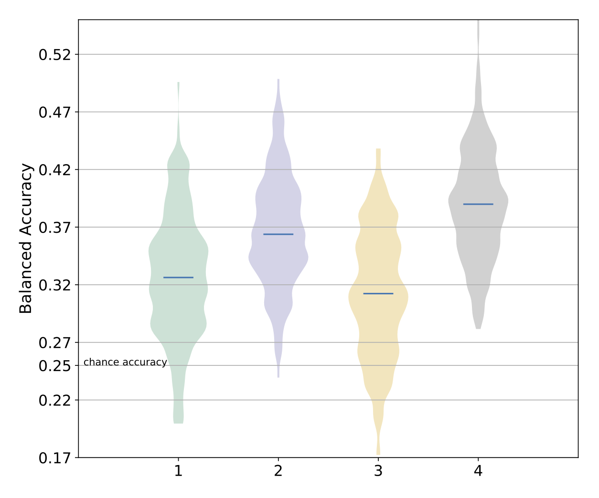

Results from Classification run¶
neuropredict produces a comprehensive report, parts of which can be seen in the figure below for a classification workflow:

The report consists of
distributions of cross-validated performance (balanced accuracy) and AUC (for binary experiments only)
confusion matrices for all feature sets,
intuitive comparison of misclassification rates across multiple features, and
misclassification frequency of subjects (for debugging and QC purposes)
Outputs and interpretation¶
The output directory (chosen with -o flag) contains the following sets of files, whose names are self-explanatory. In each set, there is separate visualization (PDF) or CSV file produced for each feature (named features A, B, C and D below) being studied, for your convenience.
First, a set of visualizations in PDF format:
balanced_accuracy.pdf
compare_misclf_rates.pdf
confusion_matrix_FeatureA.pdf
confusion_matrix_FeatureB.pdf
confusion_matrix_FeatureC.pdf
confusion_matrix_FeatureD.pdf
feature_importance.pdf
misclassified_subjects_frequency_histogram.pdf
Second, a set of CSV files in a subfolder called exported_results, which can used for further posthoc statisical analysis or to produce more customised visualizations. The typical contents are shown below - note, filenames may change depending on your input file names.
average_misclassification_rates_FeatureA.csv
average_misclassification_rates_FeatureB.csv
average_misclassification_rates_FeatureC.csv
average_misclassification_rates_FeatureD.csv
balanced_accuracy.csv
confusion_matrix_FeatureA.csv
confusion_matrix_FeatureB.csv
confusion_matrix_FeatureC.csv
confusion_matrix_FeatureD.csv
feature_importance_FeatureA.csv
feature_importance_FeatureB.csv
feature_importance_FeatureC.csv
feature_importance_FeatureD.csv
subject_misclf_freq_FeatureA.csv
subject_misclf_freq_FeatureB.csv
subject_misclf_freq_FeatureC.csv
subject_misclf_freq_FeatureD.csv
Third, a Python pickle file rhst_results.pkl containing the full set of results, that neuropredict bases the visualizations on. These are organized in a clear dictionary format with self-explanatory variable names, making it easy to reuse them for posthoc analyses in python and other places where pickle files can be read. The CV results stored in the CVResults class, in a comprehensive manner, to make it easy to traverse various combinations and to retain everything, not just the final metrics, but also the original predictions.
Fourth, a visualization named misclassified_subjects_frequency_histogram.pdf. This plots histogram of misclassification frequency across all subjects (that were used as test subjects), obtained from multiple repetitions of CV. When multiple features are being compared, they are plotted in different colors.
In addition, a set of files named misclassified_subjects_*_most_frequent.txt. Each of these files (for each feature being studied) contain the set of subject IDs that were misclassified most frequently.
The misclassified frequency visualizations and subject ID lists can help you further dig into why they have been so often misclassified. If classes are expected to be well separated, and some subjects are misclassified consistently (over 60%), you may want to ask these questions:
are they mislabelled (data entry or human error)?
were their data quality controlled properly (preprocessing or QC failure)?
what explains their ‘outlier’ status (demographics, neuropsych or something related)?
Finally, few miscellaneous set of files that neuropredict relies on to produce the comprehensive report.
We will walk you through the resulting visualizations one by one, and describe how to interpret them.
Comparison of predictive accuracy¶
The following visualization compares the predictive performance of four features, using the balanced accuracy metric. The performance of each feature is shown as a distribution, wherein multiple points in the distribution are obtained from multiple CV repetitions. As you can see,

it is important to visualize the full distribution and not just the mean or median, as the distributions are typically wide and usually not normal.
to test whether a particular feature is statistically significantly better, a distribution for each feature is necessary to run statistical tests.
{kind=link}
Comparison of misclassification rates¶

Analysis of misclassified subjects¶
An example visualization for the sample-wise (or subject-wise) misclassified frequency is shown below:
The x-axis represents the percent of misclassfication, while the Y-axis shows the corresponding number of subjects. Of particular interest in this plot is the right-most area, which shows if some subjects have been consistently misclassified (for a given feature A or B) across various repetitions of the CV. A high percentage implies either that subject is at the “borderline” of discrimination (between the classes being studied), or an indication of another potential issue with the input features (processing failures, low quality or reliability of features), or the sample characteristics (mislabelling, incorrect demographic data, confounds), or some other issue that needs to be estalished via further inspection. Hence, it is recommended that the users always look at this point along with all the results generated by neuropredict. All the subject/sample IDs that are frequently misclassified are gathered into a set of files named misclassified_subjects_*_most_frequent.txt.
In addition, the properties of this distribution itself, for a particular feature (e.g. A or B in this instance) can provide useful hints into which feature is more useful / reliable. For example, distributions that are too skewed to the right are less preferable among features with similar predictive power. The plot also reports a simple metric (as part of the legend) to compare different features being studied via total amount of misclassification beyond a certain threshold (such as 60% in this case).
If something is unclear or confusing, or some documentation is missing, please open an issue on github.